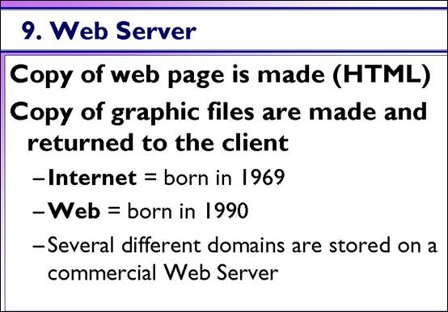

The Web Server

[D]The Google.com web server finally gets your request. But how does it know what file to send back to your browser?
Servers are set up with certain defaults. If a file name is not included they usually send a file named index.html. So, a request for http://www.Google.com/ would send a copy of the index.html file from the web server.
This is a nice convenience for the user, especially if they are a slow typist.
The server is like a gigantic copy machine. It makes copies of the requested web page (and any other files like graphics or sound files) and sends the copies back to the requesting computer.